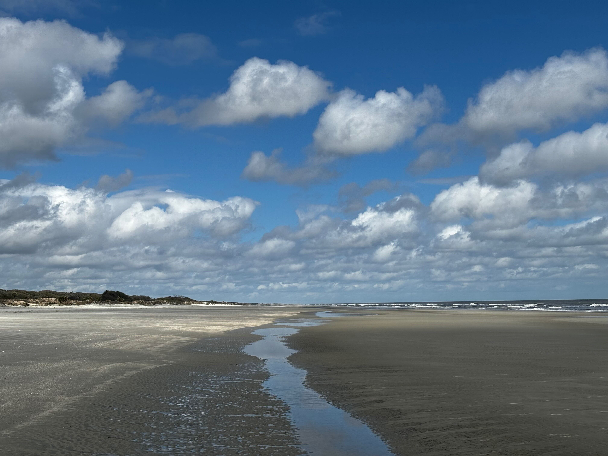

cumberland island is a barrier island off the coast of georgia. there are neat historical sites like the ruins of andrew carnegie's borther's mansion. the north half of the island is a wilderness area with sprawling live oaks draped with spanish moss. there are wild horses on the island. wide and shallow beaches with 100ft tidal zones. swamps and forests abound.
